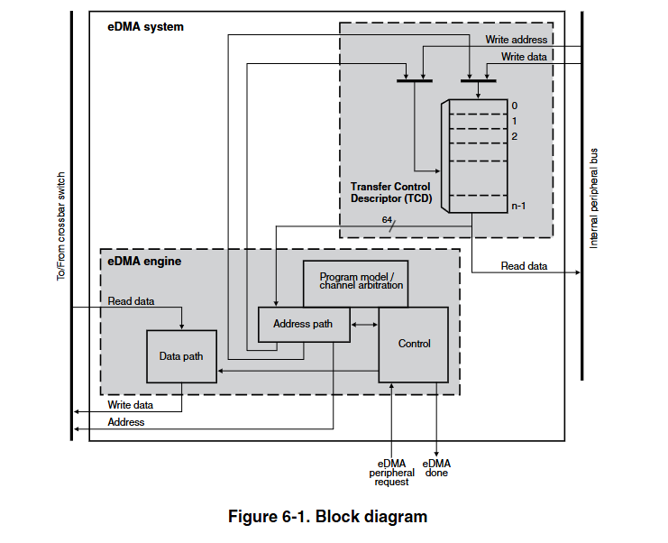

第 6 章 增强型直接内存访问（eDMA）
6.1 芯片特定的 eDMA 信息
表 6-1. 相关信息的参考链接
| 主题 | 相关模块 | 参考资料 |
|---|---|---|
| 系统内存映射 | - | 系统内存映射 |
| 时钟 | CCM |
时钟管理 时钟控制模块（CCM） |
| 电源管理 | PMU 电源管理单元 |
电源管理 电源管理单元 |
| 信号多路复用 | IOMUX |
外部信号和引脚多路复用 IOMUX |
| 中断、DMA 事件和 XBAR 分配 | - | 中断、DMA 事件和 XBAR 分配 |
6.2 概述
增强型直接内存访问（eDMA）控制器是第二代模块，能够在主机处理器干预最少的情况下执行复杂的数据传输。其硬件微体系结构包括：
- 一个 DMA 引擎，用于执行：
- 源地址和目标地址计算
- 数据移动操作
- 本地内存，包含 32 个通道中每个通道的传输控制描述符（TCD）
6.2.1 框图
下图展示了 eDMA 系统的组件，包括 eDMA 模块（“引擎”）。
图 6-1 展示了 eDMA 系统的核心组件及其交互关系，主要包括以下部分：
- eDMA 引擎
- 包含地址路径（Address path）、数据路径（Data path）、编程模型 / 通道仲裁（Program model/channel arbitration）和控制模块（Control），是数据传输的执行核心。
- 传输控制描述符（TCD）
- 存储于本地内存中，每个通道对应一个 TCD，包含源地址、目标地址、传输大小等关键参数。
- 内部外设总线（
Internal peripheral bus）
- 连接 eDMA 引擎与芯片内部其他模块（如交叉开关），用于传输地址、数据和控制信号。
- 交叉开关（
Crossbar switch）
- 作为总线主控枢纽，负责在 eDMA 引擎与系统内存、外设之间建立数据传输路径。
- 输入 / 输出信号
- 请求信号（eDMA peripheral request）：外部设备（如外设）触发 eDMA 传输的请求信号。
- 完成信号（eDMA done）：eDMA 引擎向外部反馈传输完成的信号。
- 读写数据总线（Read/Write data）：用于传输实际数据，支持 16/32 位对齐。
- 地址总线（Address）：传输源地址和目标地址。
二、数据传输全流程解析
eDMA 的工作流程可分为初始化配置、传输执行和完成处理三个阶段，结合框图信号流向说明如下：
阶段 1：初始化配置
软件配置 TCD
通过内部外设总线，主机处理器向 eDMA 引擎的
编程模型寄存器
写入每个通道的 TCD 参数，包括：
- 源地址（SADDR）、目标地址（DADDR）
- 传输大小（SSIZE/DSIZE，如 8/16/32 位）
- 小循环字节计数（NBYTES，单次循环传输量）
- 主迭代计数（CITER，循环次数）
- 优先级、中断使能等控制位。
TCD 存储于本地内存阵列中，供 eDMA 引擎调用。
通道激活触发
- 激活方式可选：
- 软件触发：主机通过寄存器直接启动通道。
- 硬件触发：外设通过eDMA peripheral request信号触发（如 ADC 完成转换后请求 DMA 传输）。
- 通道链触发：前一通道传输完成后自动启动下一通道（连续传输场景）。
阶段 2：传输执行（核心流程）
- 地址路径处理（第一阶段流水线）
- eDMA 引擎从本地内存读取目标通道的 TCD，加载到地址路径寄存器（通道 x 或 y，取决于是否抢占）。
- 地址计算：根据 TCD 中的参数生成源地址和目标地址，支持递增、递减、固定地址等模式。
- 优先级仲裁：若多个通道同时请求，通过固定优先级或循环仲裁逻辑（Program model/channel arbitration 模块）选择高优先级通道执行。
- 抢占机制：若高优先级通道请求介入，当前通道在完成一个读写序列后暂停，TCD 状态保存到通道 y 寄存器，高优先级通道优先执行（由 DCHPRI 寄存器的 ECP 位控制）。
- 数据路径处理（第二阶段流水线）
- 读取数据：通过交叉开关从源地址（如内存或外设）经内部读取数据总线获取数据，存入内部数据缓冲区（支持 16/32 字节暂存）。
- 数据对齐与转换：若源和目标数据大小不等（如 16 位→32 位），通过多路复用逻辑（Data path 模块）组合数据（如两次 16 位读取合并为一次 32 位写入）。
- 写入数据：通过交叉开关将缓冲区数据经内部写入数据总线写入目标地址，完成一次小循环传输。
- 循环控制：小循环（NBYTES）完成后，地址路径自动更新 SADDR/DADDR 和剩余字节数，直至主迭代计数（CITER）完成。
阶段 3：完成处理与反馈
传输结束判断
- 当主迭代计数完成或发生错误时，eDMA 引擎执行以下操作：
- 更新 TCD 中的最终地址和状态（如写入本地内存）。
- 若启用分散 / 聚集模式，加载下一个 TCD（需提前配置内存中的 TCD 链表）。
中断通知
通过
编程模型 / 通道仲裁模块
向中断控制器发送信号：
- 正常完成中断：每个通道独立生成中断（如主迭代结束）。
- 错误中断：若传输过程中发生错误（如总线超时），所有通道的错误状态逻辑或后触发全局错误中断。
信号反馈
- 通过eDMA done 信号向外部设备（如触发传输的外设）反馈传输完成，设备可据此启动后续操作。
三、关键机制与优化设计
- 双流水线架构
- 地址路径（第一阶段）与数据路径（第二阶段）流水线作业，减少地址计算与数据传输的等待时间，提升带宽利用率。
- 本地内存与双端口控制器
- TCD 存储于片内高速内存，避免频繁访问主存的延迟。
- 内存控制器支持 eDMA 引擎与外设总线的并发访问，且 eDMA 请求优先，确保实时性。
- 灵活的仲裁与抢占
- 固定优先级适用于实时性要求高的场景（如音频流），循环仲裁公平分配资源（如多任务数据处理）。
- 抢占机制允许高优先级任务打断低优先级传输，避免关键数据延迟。
四、典型应用场景
- 外设数据搬运：如 ADC 采样数据从外设寄存器批量传输至内存，无需 CPU 干预。
- 内存到内存拷贝：固件升级时的代码搬移，或图像处理中的缓冲区数据复制。
- 分散 / 聚集传输：从多个非连续地址读取数据并合并写入（如网络数据包组装）。
通过上述流程，eDMA 实现了高效、低功耗的数据传输，显著减轻了 CPU 负载，尤其适用于需要高吞吐量和实时响应的嵌入式系统。
6.2.2 模块组成
eDMA 模块包含两个主要模块：eDMA 引擎和传输控制描述符本地内存。 表 6-2 描述了 eDMA 引擎的子模块。 表 6-2. eDMA 引擎子模块
| 子模块 | 功能 |
|---|---|
| 地址路径 | 地址路径模块： ・提供两个通道传输控制描述符（TCD）的寄存器版本 - 通道 x（正常启动）和通道 y（抢占启动） ・管理所有主总线地址计算 |
| （续表） | 所有通道提供相同的功能。这种结构允许在活动通道的读写序列完成后，若 eDMA 引擎断言更高优先级的通道激活，则抢占与该活动通道相关的数据传输。eDMA 激活通道后，它会运行直到小循环完成，除非被更高优先级的通道抢占。这提供了一种机制（由 DCHPRI n [ECP] 启用），其中 eDMA 引擎可以抢占大型数据移动操作，以最小化另一个通道停滞的时间。当 eDMA 引擎选择一个通道执行时，它会从本地内存读取该通道 TCD 的内容，并将其加载到以下其中一个中： ・地址路径通道 x 寄存器（正常启动） ・地址路径通道 y 寄存器（抢占启动） 小循环执行完成后，地址路径硬件会将 TCD n _{SADDR, DADDR, CITER} 的新值写回本地内存。如果主迭代计数完成，eDMA 引擎会执行额外的处理，包括： ・最终地址指针更新 ・重新加载 TCD n _CITER 字段 ・作为分散 / 聚集操作的一部分，可能从内存中获取下一个 TCD n |
| 数据路径 | 数据路径模块实现总线主设备的读 / 写数据路径。它包括一个数据缓冲区和必要的多路复用逻辑，以支持任何所需的数据对齐。内部读取数据总线是主要输入，内部写入数据总线是主要输出。地址和数据路径模块直接支持两级流水线内部总线。地址路径模块代表总线流水线的第一阶段（地址阶段）。数据路径模块实现流水线的第二阶段（数据阶段） |
| 编程模型 / 通道仲裁 | 该模块实现： ・eDMA 编程模型的第一部分 ・通道仲裁逻辑 编程模型寄存器连接到芯片的内部外设总线。eDMA 外设请求输入和中断请求输出也连接到该模块（通过控制逻辑） |
| 控制 | 控制模块为 eDMA 引擎提供所有控制功能。对于源大小（SSIZE）和目标大小（DSIZE）相等的数据传输，eDMA 引擎会执行一系列源读取 / 目标写入操作，直到传输了小循环字节计数（NBYTES）中指定的字节数。对于源和目标大小不相等的 TCD，eDMA 引擎会为每个较大尺寸的引用执行多次较小尺寸数据的访问。例如，如果源大小（SSIZE）引用 16 位数据，而目标大小（DSIZE）是 32 位数据，eDMA 会执行两次读取，然后一次 32 位写入 |
表 6-3 解释了 TCD 本地内存的分区。 表 6-3. 传输控制描述符内存
| 子模块 | 描述 |
|---|---|
| 内存控制器 | 内存控制器逻辑实现所需的双端口控制器，管理来自 eDMA 引擎的访问以及来自内部外设总线的引用。如果发生同时访问，eDMA 引擎获得优先级，外设事务暂停 |
| 内存阵列 | 内存阵列为每个通道的传输配置文件提供 TCD 存储 |
6.2.3 特性
eDMA 模块是一个高度可编程的数据传输引擎，经过优化，可最大限度减少对主机处理器的干预。它适用于静态已知要传输的数据大小，且不在传输的数据本身中定义大小的应用。eDMA 模块具有以下特性：
- 通过双地址传输进行所有数据移动：从源读取，写入目标
- 可编程的源地址和目标地址以及传输大小
- 支持增强寻址模式
- 32 通道实现，可在主机处理器干预最少的情况下执行复杂的数据传输
- 内部数据缓冲区，用作临时存储以支持 16 字节和 32 字节传输
- 连接到交叉开关（AXBS），用于数据移动的总线主控
- TCD 支持两层深度的嵌套传输操作
- 每个通道在本地内存中存储 32 字节的 TCD
- 由小字节传输计数定义的内部数据传输循环
- 由主迭代计数定义的外部数据传输循环
- 通道激活通过以下三种方法之一：
- 显式软件启动
- 通过通道到通道链接机制启动，用于连续传输
- 每个通道一个外设定速硬件请求
- 固定优先级和循环通道仲裁
- 通过可编程中断请求进行通道完成通知
- 每个通道一个中断。当主迭代计数完成时，eDMA 引擎可以生成一个中断
- 每个通道可编程错误终止，并逻辑求和以形成一个错误中断到中断控制器